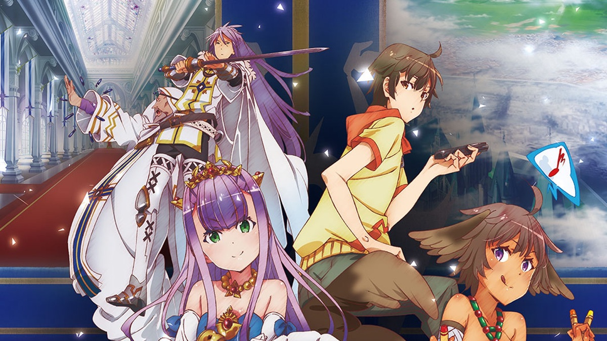

While an anime protagonist who is a stand-in for its own viewers can be tiring and pedantic, this show had some interesting and sophisticated concepts that deserve discourse. For time, I won't synopsize for those who haven’t seen it but there will be spoilers. I do recommend you watch it as it is a decent anime, but if you don’t want to but still want to read on, I’ll link one here.
Initially, this anime does feel like the main character, Shinichi, is just the strawman for the guy that wishes he could be Kirito but isn’t. While there is some fan service, complete with a looks-too-young-for-comfort tsundere (but she’s an elf so she’s actually ol–shut up, first of all), it's not so overbearing that it's unwatchable. If you took away the harem-esque obsession with this random regular man, the uncomfortable pining and weird young girl being sexualized, and focused more on the cool lizard man-see Brooke Darwin- I would recommend it so much more because of the cool concept and potential of the world the anime has created.
If you don’t want to watch the anime and you can’t be bothered to read a wiki but you're still here (?), all you need to know is that Shinichi is an ordinary young man from Japan who is contracted to bring otaku culture to the fantasy lands of the Eldant Empire. He is told it is to peacefully unite the kingdom as it expands across different lands with different customs and languages. Using a new attractive and expansive culture to bring everyone together as they join the Empire, in theory is fascinating and can be seen in actual history. Francis B. Bacon wrote many essays on how culture and arts is what will keep the British Empire strong as it continued to conquer the world in the 1600s (ask me about my Bacon is Shakespeare beliefs I dare you). We also have seen the opposite; as one of the reasons Rome fell was it got too big, too far stretched out and there were so many different cultures and tribes existing within the Roman Empire it started to break apart. Outbreak Company poses a real military issue in a fantasy world, using magic to solve an issue that our history has seen before.
Shinichi is told this campaign is a peaceful way for the Empire to make the people of their conquered lands essentially submit, and while peace is always better than war-still weird. And weirder still that the person who reaches out, hires and brings him over is a military captain. In the end, this premise was a lie, the Empire did want Shinichi’s weeb-anese influence for violent means, he finds out and decides to save the day, free the oppressed yada yada, you know how these things go. He also teaches his half-elf maid to read and write, which is cool. In this world half-elves are seen as lesser than, like a mutt. She is a servant who has been denied any education, and through the course of the show Shinichi teaches Myucel how to read and write in Japanese. Yes, it's a bit white-knight savior complex but I like what this detail does to these character’s relationship. Especially since they believe this will become the new common language for the Empire and this discarded half-breed will be one of the first to know it, which will theoretically sky rocket her social class standing.

Overall, I have a positive outlook on this anime; the concept is super cool, the characters are interesting enough and throwing some elves and magic in there is cool too. The insidious nature of the plot twist adds an extra layer underneath the entire story. You are somewhat suspicious of it, it’s not a complete blindside but since the first half of the show feels more like a slice-of-life than anything else it did still surprise me enough to evoke these thoughts of subterfuge and political conquest, warfare and homogenisation through oppression and propaganda.
At the end of the day, do I recommend this anime? Yes. Is it in my top ten? No. Top twenty? Still probably not, but I will always insist people watch it. I do wish they did a bit more with the concept, and took that part of it more seriously, but I still find myself thinking about the implications that Outbreak Company has presented. After all, it is where I got my gamertag name I still continue to use to this day.